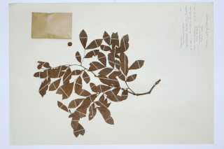

Images :


| Habit : | Trees up to 20 m tall. |
| Leaves : | Leaves compound , paripinnate ; stipules caducous ; leaflets 3 pairs, lower pair smaller, lamina 2.5-3.5 x 1-1.5 cm, elliptic-obovate with asymmetrical sides, apex retuse , base cuneate , slightly oblique on narrower side of the lamina ; midrib raised above; secondary_nerves 13-16 pairs; tertiary admedially_ramified . |
| Inflorescence / Flower : | Inflorescence axillary . |
| Fruit and Seed : | Pod , globular with a vertical groove , up to 1.3 cm, 1-seeded . |